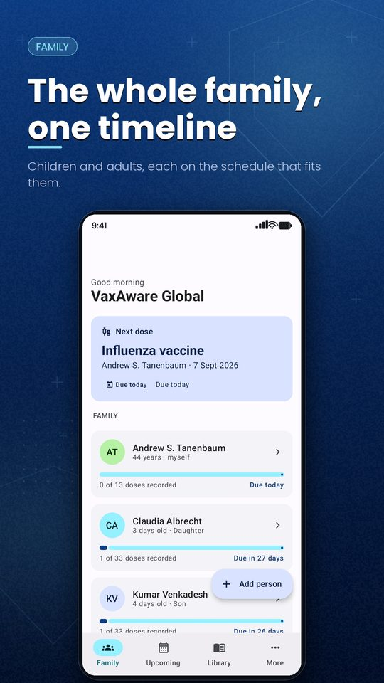
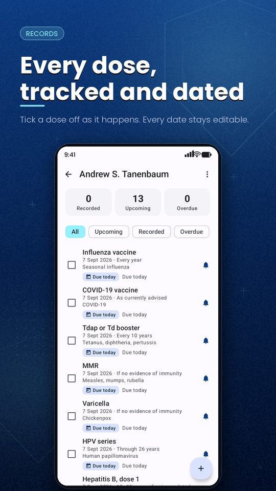
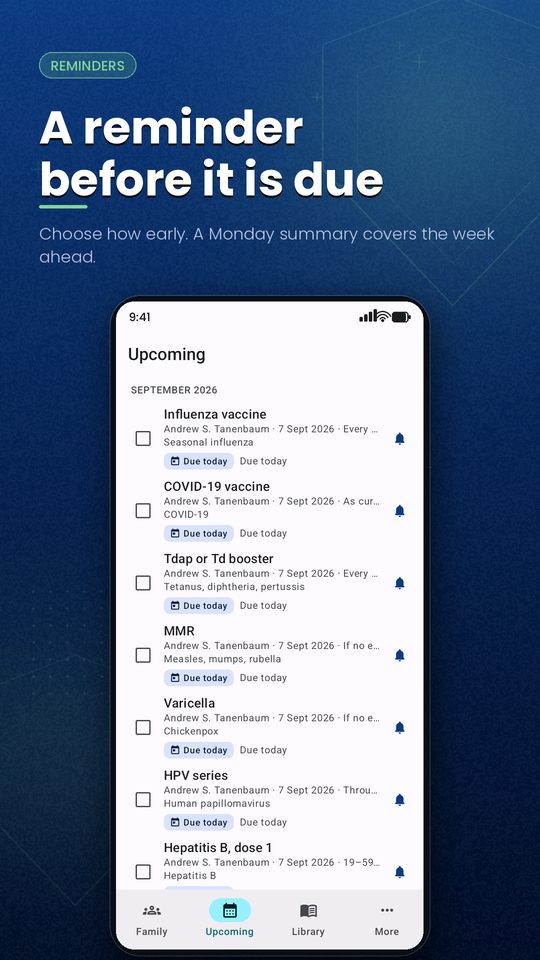
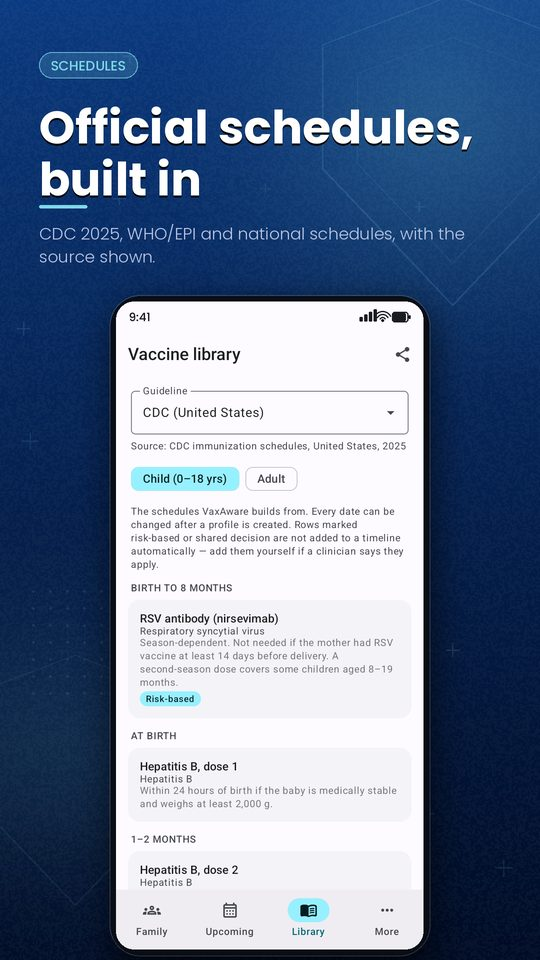
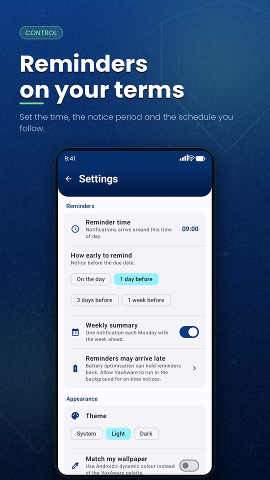
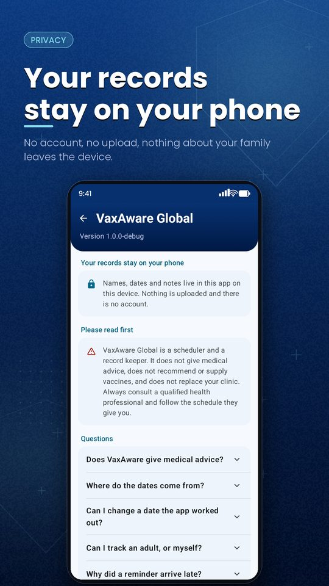

ZentiumDev · Case study · Android · 2026
VaxAware Global keeps vaccination records for a whole household — children and adults — and reminds you before each dose is due. Every date is derived from published immunisation guidance, and none of it leaves the phone.
Stack
There is no API to build here, and that is the design rather than a shortcut. Vaccination records tied to a named child are about as sensitive as consumer data gets; the safest architecture for them is one with nowhere to send them.
KotlinJetpack ComposeMaterial 3
Navigation ComposeHiltRoom
DataStoreWorkManagerCoroutines / Flow
kotlinx.serialization
AGP 9Gradle 9KSP
compileSdk 37minSdk 26R8
version catalog
SQLite via RoomDataStore Preferences
java.timeapp-private storage
Google AdMobUMP consent
Play In-App Review
CDC 2025WHO / EPIIndia (IMA / IAP)
Sri Lanka national
Architecture
Adding a country should not touch the user interface. It does not: a schedule is an interface with a list of rows, and everything downstream reads the same shape.
CDC 2025, the WHO/EPI baseline, the IMA/IAP schedule for India and Sri Lanka's national programme. Each is one file listing its rows and naming its source. Adding a fifth country means adding a file and a line in the registry.
An offset expressed in weeks, months or years; the anchor it counts from; the age label a clinic would recognise; and how strongly the schedule recommends it — routine, risk-based, or shared decision.
One use case turns a profile into dated doses. Children anchor to date of birth, adults to the day the profile was created, and age-triggered adult rows — shingles at 50, RSV at 75 — anchor back to birth again.
Doses land in SQLite where the user can edit any of them. The scheduler reads back what is still outstanding and queues a reminder for each one inside a rolling window.
The abstraction
The whole contract fits on a screen. Everything specific to a country lives in the list; nothing specific to a country lives anywhere else.
// A distance from an anchor, expressed the way published schedules // express it — so "15 months" lands on the same day of the month // and "4 years" survives leap years. data class AgeOffset( val years: Int = 0, val months: Int = 0, val weeks: Int = 0, val days: Int = 0, ) enum class Recommendation { ROUTINE, RISK_BASED, SHARED_DECISION } interface Guideline { val id: String val displayName: String val source: String val definitions: List<VaccineDefinition> // Only routine rows are placed on a timeline automatically. fun routineFor(track: ScheduleTrack) = definitionsFor(track).filter { it.recommendation == ROUTINE } }
Problems
The first version multiplied months by 30. A child born on 31 January drifted days off every milestone, and "4–6 years" lost a day per leap year. Offsets are now calendar offsets. India's primary series runs on weeks — 6, 10 and 14 — which is not the same as CDC's 2, 4 and 6 months, and the type makes that difference impossible to blur.
Nirsevimab depends on the season and the mother's vaccination. India's third rotavirus dose exists for one brand and not another. Whether either applies turns on facts the app deliberately does not hold, so those rows are listed in the library with their condition stated and never dated onto a child's timeline. The app says they exist; it does not decide they apply.
One WorkManager job per pending dose sounds right until you count: a family of four on a childhood schedule is well over a hundred doses, some due years out. Multi-year delays are far outside what WorkManager is built for and close to the per-app job ceiling some OEM builds enforce. Reminders are now queued sixty days ahead, and a daily pass pulls in the next batch.
The trigger is the due date minus the notice period. Anything whose moment had already passed was dropped — which covered every overdue dose, and every dose in an adult profile, since the adult schedule dates from enrolment. Those are precisely the doses worth chasing. They are now nudged at the next occurrence of the reminder hour, at most once a day.
Reminders run on WorkManager rather than AlarmManager. Work survives reboots
and updates without a boot receiver, retries with backoff on its own, and needs
neither SCHEDULE_EXACT_ALARM nor the Play Console declaration that
permission now requires. A vaccination notice does not need second-level
precision.
Names, dates of birth and dose records are special category data under GDPR Article 9. There is no account, no sync and no analytics, so the question of protecting them in transit never arises. The only network traffic in the app is the ad request, and nothing entered by the user is used to target it.
Screens






VaxAware Global is a scheduler and a record keeper. It does not give medical advice, does not recommend or supply vaccines, and does not replace a clinic. The schedules are transcribed from published guidance and are a starting point only. The same statement appears in the app, its privacy policy and its Play listing.